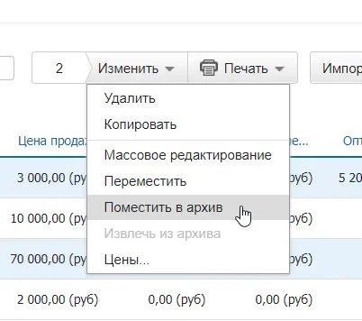
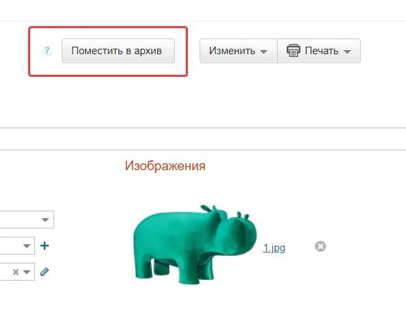
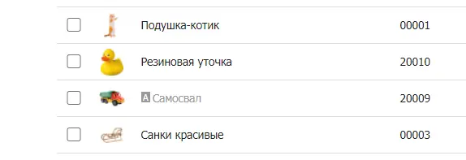
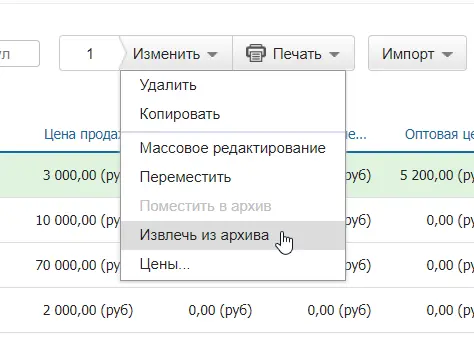
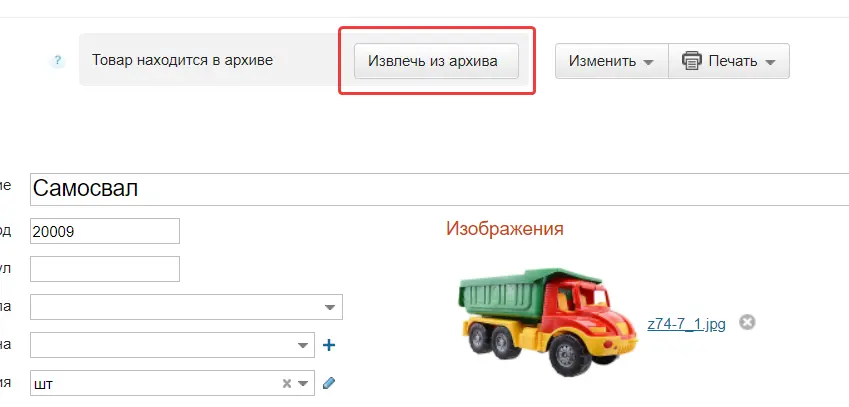

Неактуальные товары и контрагентов, с которыми вы больше не работаете, можно переносить в архив. Информация по ним будет скрыта, но при этом останется в системе. Также можно убрать в архив услуги, партии, сотрудников, юрлица, склады, проекты и договоры.
Перенесенные в архив элементы не отображаются в справочниках, их нельзя добавлять в документы, контрагентам из архива нельзя выставить счет, но при этом существующие документы не пропадают. При необходимости элемент всегда можно достать из архива и продолжить с ним работать. Можно переносить в архив сразу группу элементов с помощью массового редактирования и импорта.
Архивирование удобно использовать, когда справочники растут в объемах и неактуальная информация мешает работе.
Юрлица, убранные в архив, не учитываются в ограничениях тарифа.
Перенос элементов в архив
Рассмотрим перенос элементов в архив на примере товаров.
Перенос элементов в архив из справочника
- Перейдите в раздел Товары → Товары и услуги.
- Отметьте флажками элементы, которые вы хотите убрать в архив.
- Нажмите вверху на кнопку Изменить и выберите Поместить в архив в выпадающем списке.

Перенос элементов в архив из карточки
- Перейдите в раздел Товары → Товары и услуги.
- Нажмите на товар, который вы хотите убрать в архив.
- Нажмите вверху на кнопку Поместить в архив.

Также можно поместить в архив модификацию — нужно открыть ее карточку и нажать вверху на кнопку Поместить в архив.
Перенесенные в архив товары недоступны для закупки и продажи, не отображаются в складских остатках, а в документах помечаются серым и буквой А.
Отображение архивных элементов
Если вы не можете найти элемент в справочнике, проверьте, не был ли он убран в архив. Чтобы найти его, нужно отобразить архивные элементы в списке. Рассмотрим на примере товаров.
- Перейдите в раздел Товары → Товары и услуги.
- Нажмите вверху на Фильтр и выберите в меню Показывать пункт Только архивные либо Все.
- Нажмите на кнопку Найти.
Архивные элементы помечаются буквой А и серым цветом.

Извлечение элементов из архива
Рассмотрим извлечение элементов из архива на примере товаров.
Извлечение архивных элементов из справочника
- Проверьте, отображаются ли архивные элементы в справочнике.
- Отметьте флажками элементы, которые вы хотите извлечь из архива.
- Нажмите вверху на кнопку Изменить и выберите Извлечь из архива.

Извлечение архивных элементов из карточки
- Перейдите в раздел Товары → Товары и услуги.
- Нажмите на товар, который вы хотите извлечь из архива.
- Нажмите вверху на кнопку Извлечь из архива.

Также можно извлечь из архива модификацию — нужно открыть ее карточку и нажать вверху на кнопку Извлечь из архива.